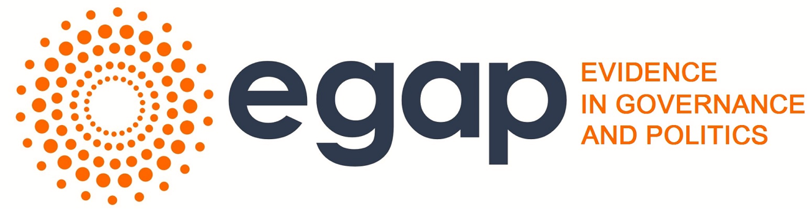
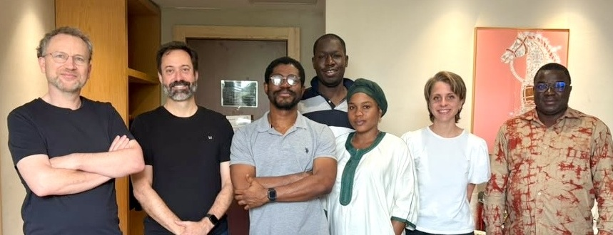

Abidjan Learning Days 2026

Slides for Abidjan Learning Days 2026
Bilingual teaching slides (En / Fr) for the EGAP Learning Days in Abidjan, 2026.
Lecture 1 Why experiment? Motivation: limits of observational research and what randomized experiments offer. Exercise 1 In-class experiment Card-game briefing: random assignment and diagnosis by hand. Lecture 2 Causal inference Potential outcomes, average treatment effects, and identification. Lecture 3 Design & diagnosis MIDA framework: declare, diagnose, and redesign with DeclareDesign. Lecture 4 Randomization 1 Simple, complete, block, cluster, and multi-arm assignment. Lecture 5 Introduction to R Objects, functions, and basics for running analyses in R. Exercise 2 R exercises Guided R practice: data basics randomization estimation and power. Lecture 6 Randomization 2 Factorial, waitlist, and encouragement designs. Exercise 3 Projects Getting going on group projects Lecture 7 Estimation 1 Inquiries, estimands, answer strategies, and estimators. Lecture 8 Estimation 2 Multi-arm experiments, regression, and hypothesis testing. Lecture 9 Power & diagnosis p-values, power, and simulation-based design diagnosis. Lecture 10 Presenting results Communicating experimental designs and interpreting findings. Lecture 11 Threats to validity Attrition, non-compliance, spillovers, demand effects, and excludability. Lecture 12 Lifecycle of an experiment From idea and partners through funding, piloting, implementation, and reporting. Lecture 13 Applying for grants Building a six-part argument: stakes, design, timeline, budget, and team.
The book is available in both English and French:
EGAP Methods Guide on Randomization (https://egap.org/resource/10-things-to-know-about-randomization/)
EGAP’s Metaketa Initiative works to accumulate knowledge by pre-planning a meta-analysis of multiple studies that have high internal validity due to randomization.
Le livre est disponible en anglais et en français :
Guide des méthodes EGAP sur la randomisation (https://egap.org/fr/resource/10-choses-a-savoir-sur-la-randomisation/)
L’initiative Metaketa d’EGAP vise à accumuler des connaissances en pré-planifiant une méta-analyse de plusieurs études qui ont une validité interne élevée en raison de la randomisation.

Adikath, Alyssa, Brice, Macartan, Vin, Vincent, Yannick